Strategic design partnership shaping the product vision and experience.
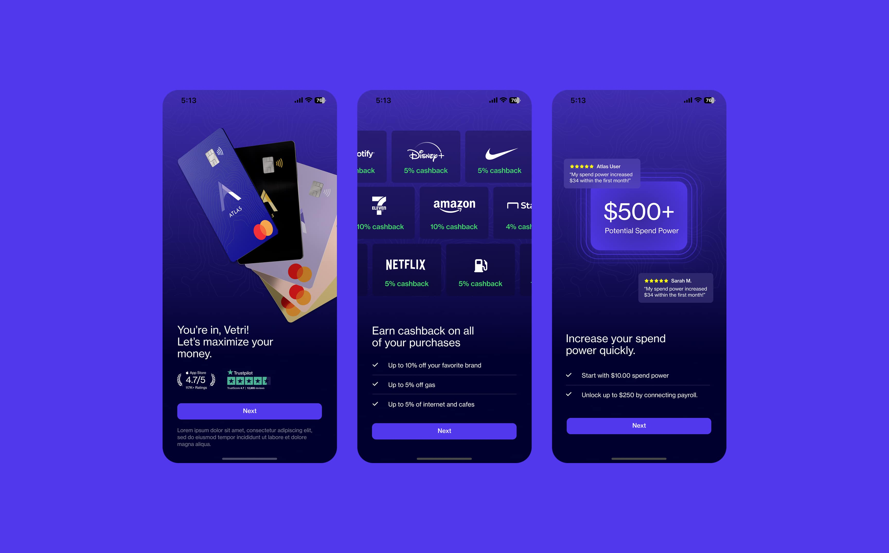
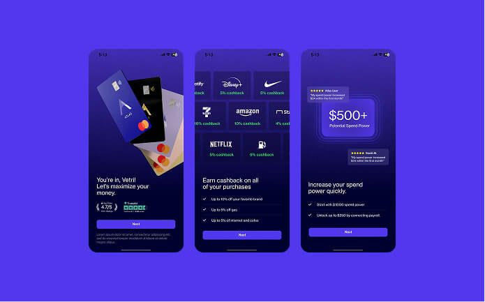
As their primary design partner, we collaborated directly with the co-founders to drive a tripling of the user base within twelve months. The engagement spanned full-scale redesigns and end-to-end discovery and execution of new features.
Product strategy, product design, UX, brand design
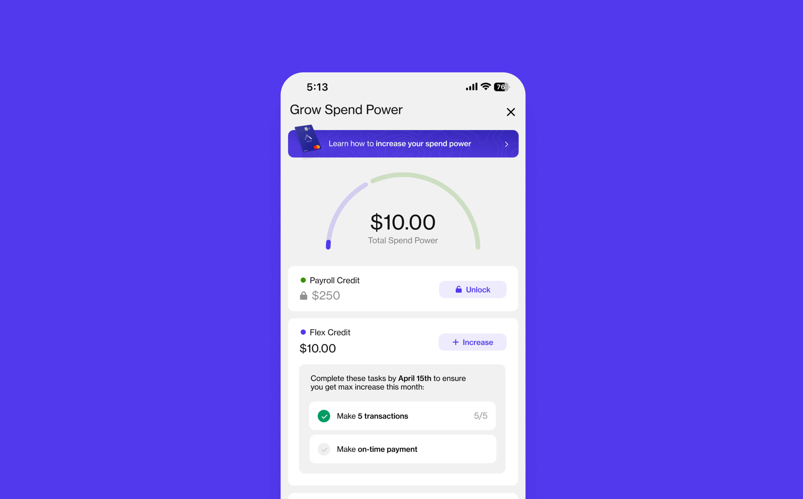
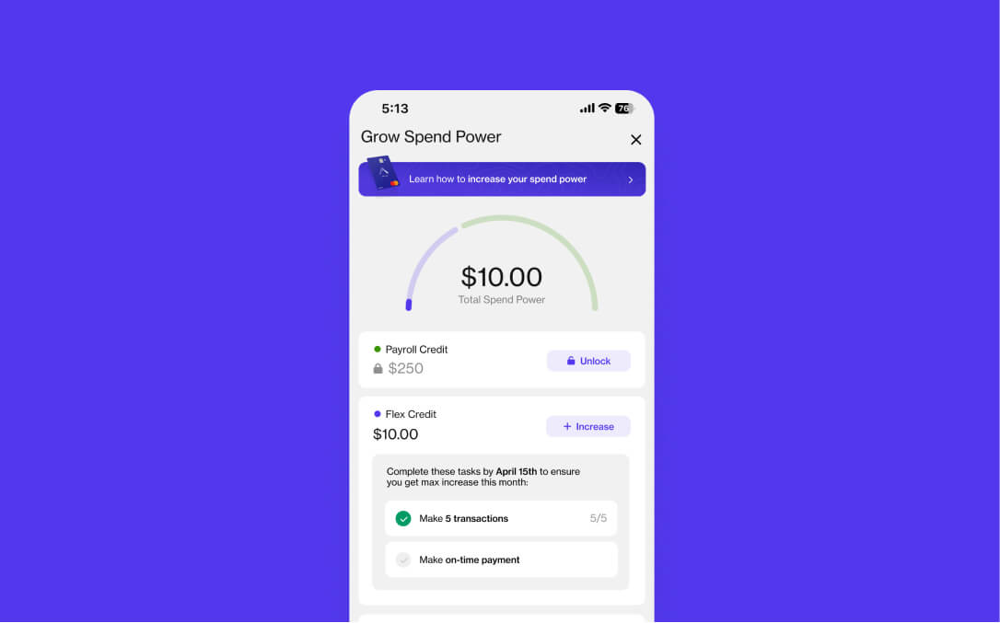
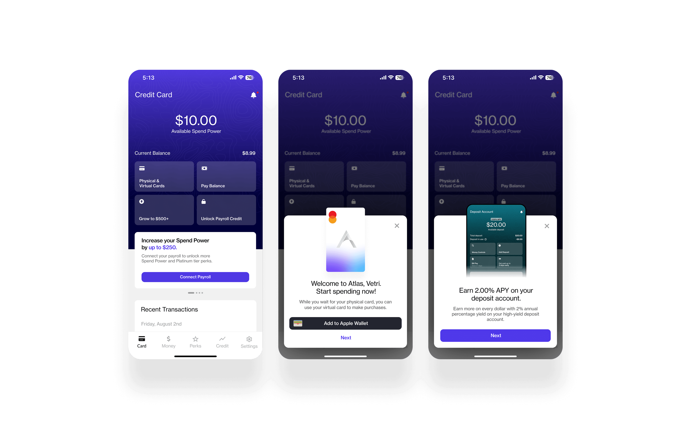
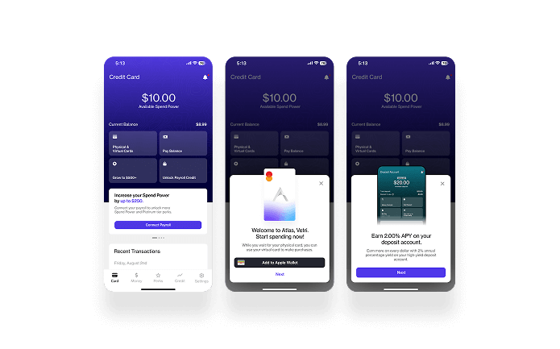
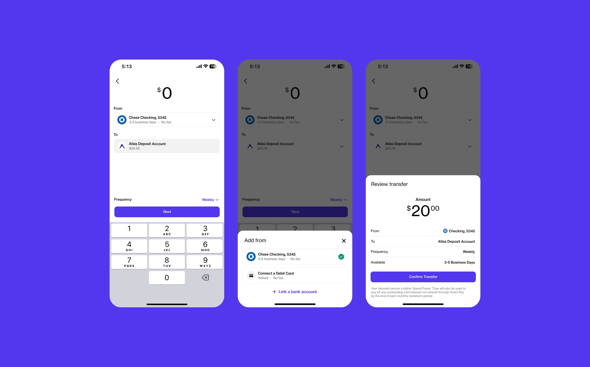
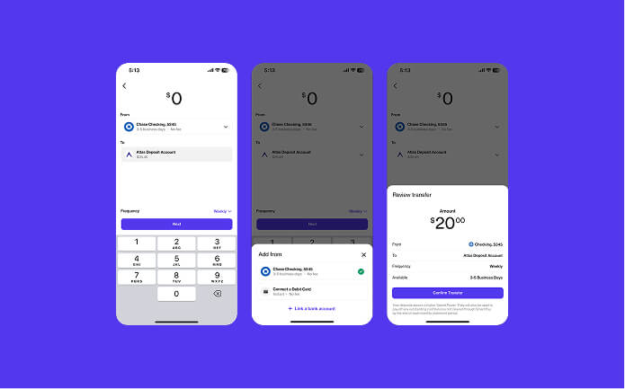
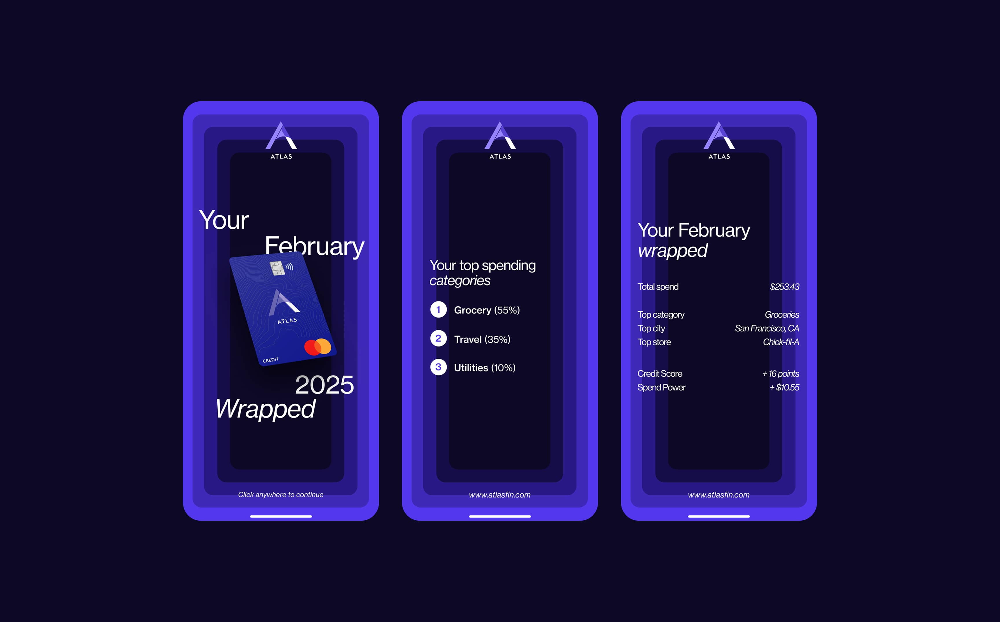
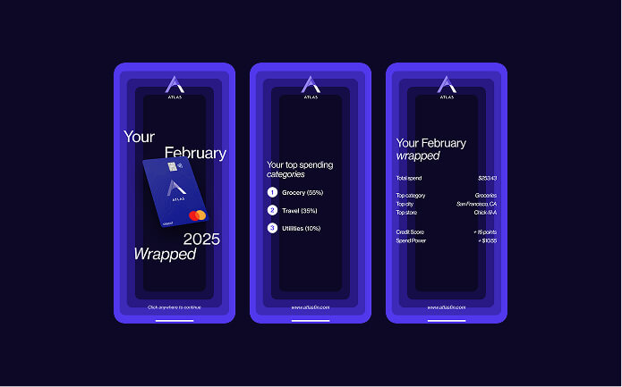
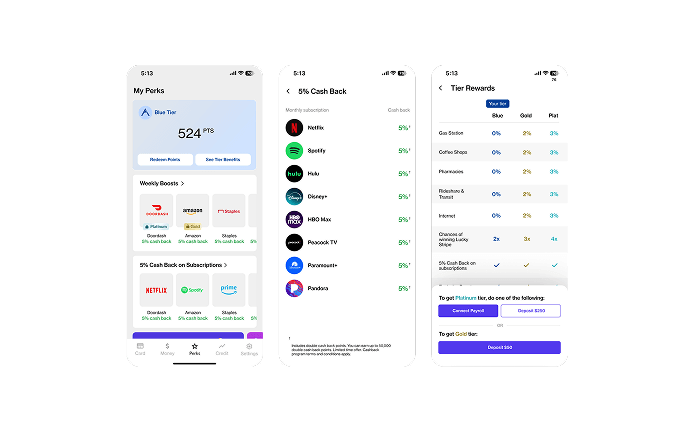
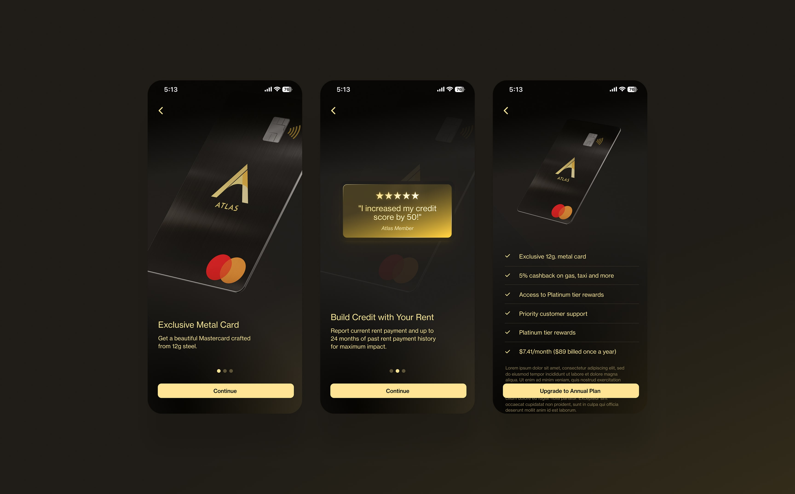
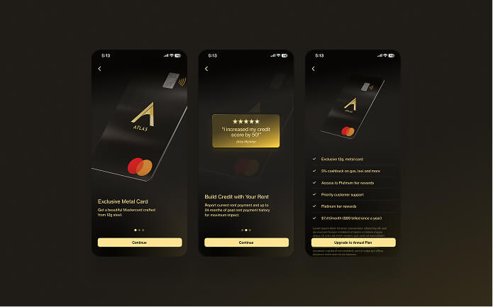